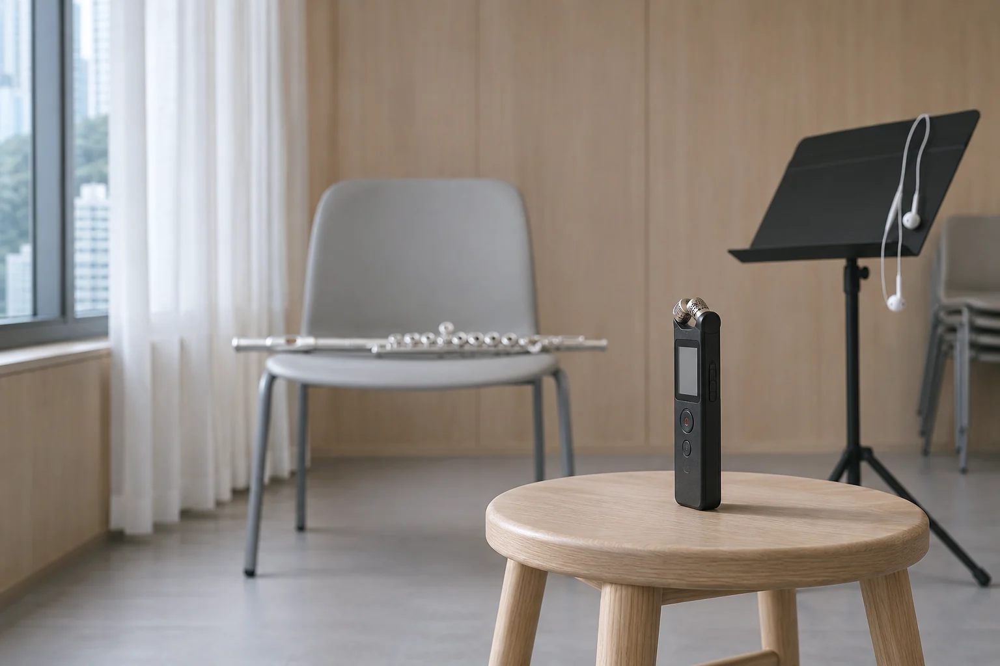
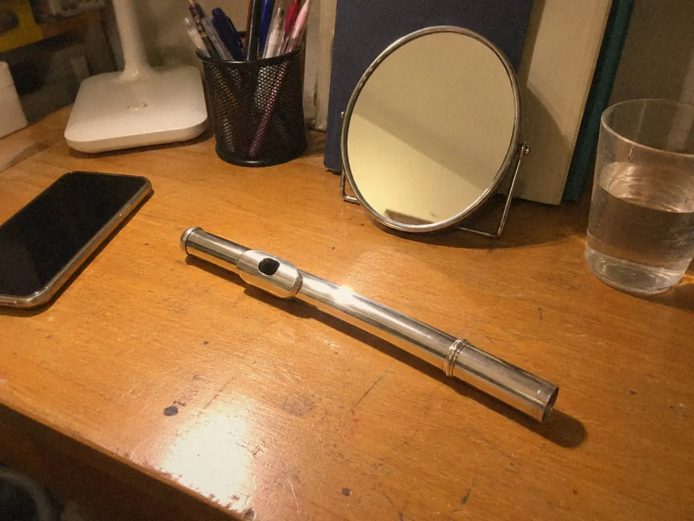
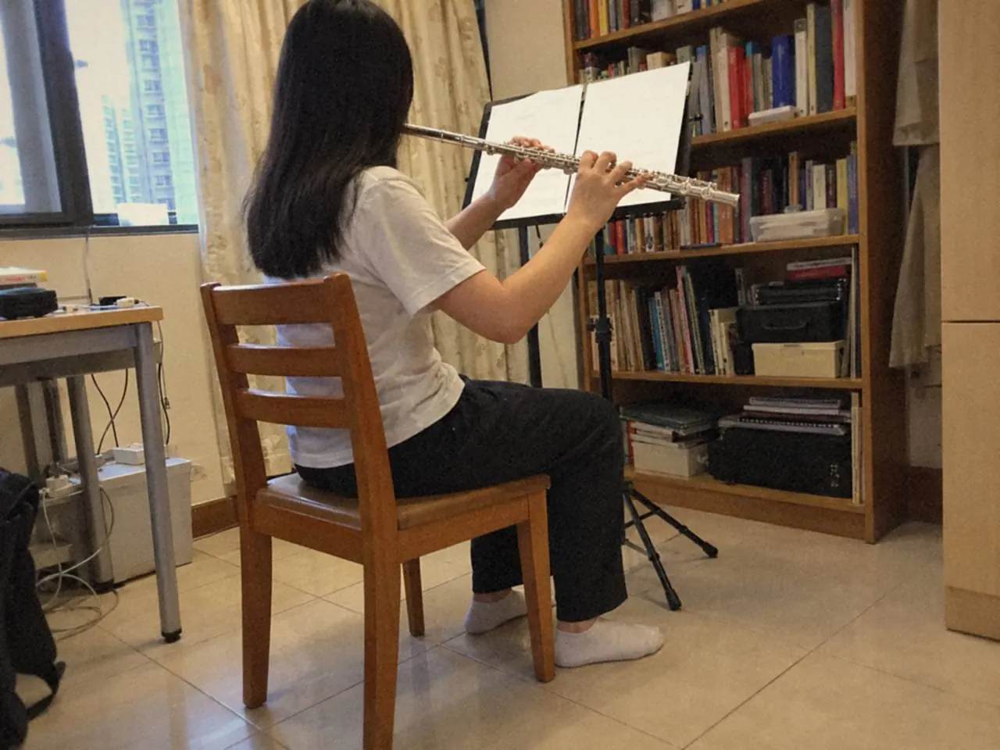
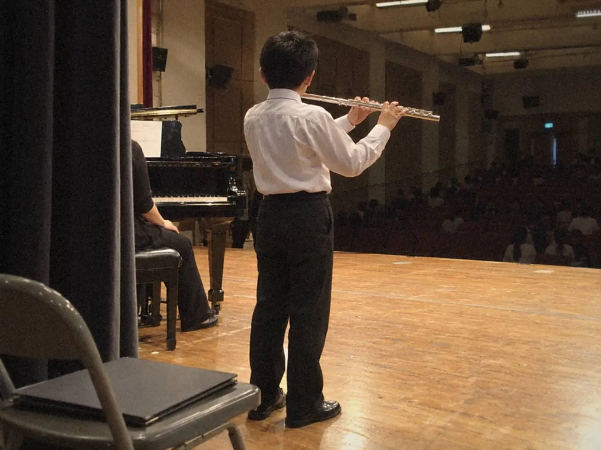

有學生吹完一句，把笛橫在膝上，先問一句：是不是這支笛不夠好？

我請他再吹一次，只吹第一個音。聲音一出來，問題通常已經寫在裏面：氣衝得太急，音頭帶着一層硬殼；或者反過來，怕太大聲，笛一貼唇就縮，聲音浮在氣裏，找不到中心。笛本身，多數沒有問題。
一個音有三段：怎樣開始、中間那口氣有沒有托住、最後怎樣放。三段分開練，比籠統地「練好聽一點」有用。
口型要配自己的唇
照片可以參考，不必按圖索驥。每個人的唇厚薄不同，牙齒排列不同，吹口要落的位置也略有出入。同一句指點，落在一個學生身上剛好，落在另一個身上就成了夾嘴。
找一個容易發聲的中音，用最少的改動試：這一遍氣流偏上一點，下一遍偏下。每次只動一項，動完就吹同一句，用錄音記下。角度、力度、下巴位置一起改，聲音變了也不知道是誰的功勞。
鏡子只能看下巴有沒有擠，看不住聲音。錄音要配着用：先錄一段，改一處，再錄一段，兩段交替回聽。聽得出來的分別，才算真的改了。

若角度稍偏便完全失去聲音，退回上一個位置。新動作需要時間站穩，不必急着把範圍拉大。
單音穩住了，再帶進兩音連奏。單獨吹清楚，一換指便散，問題未必在嘴唇。記下出現差異的那一個接縫，下次就有具體的位置可以調整。換指的做法，另見長笛手指：清晰與換指。
譜架挪一寸，聲音也跟着變
一行譜還未吹完，頭已經越垂越低。這個姿勢很常見，代價不小：頸一低，下顎跟着收，吹口的角度便偏；肩一沉，吸氣只到胸口。
先不吹。站在平日的位置，把笛放上，讀譜上最上和最下那兩行。頭頸要大幅移動，就表示譜架的高度或距離不對。調到兩處都看得清楚，手臂仍然抬得自然。
坐着練，多看兩項：雙腳能否平放地上，背有沒有為了靠近譜架而離開椅背。地方小，不必大興土木。一支可移動的譜架，一盞照得到譜面的燈，半分鐘佈置好，往後每次省下的是分心。
調好之後，吹同一句容易的旋律，前後比較。留意呼吸、視線和手指有沒有少一點忙亂，音量暫時不用管。姿勢這種事，靠感覺不易發現，錄影通常更清楚。

弱奏不是把氣收細
譜上寫着 p（piano，弱奏），學生把氣一收，第一個音就不見了。
音量可以小，方向不能散。氣仍然要送到同一個點，只是量少一點；舌頭放開之後，仍要有一道氣接住。聲音是被「托」着出來的，不是被「省」下來的。
弱奏往往照出平日被音量遮住的問題：嘴角收得太緊、氣流沒有對準、吸氣後停得太久。這幾項要分開看。都歸作「不夠氣」，便找不到真正的原因。
我通常會請學生把同一個音吹三次：一次平日音量，一次輕，一次更輕，然後停手比較。三個音錄在同一個檔案裏，差別比記憶可靠。
挑一個容易的中音，用平日音量吹，然後一級一級減。每一級吹幾個音，聽音頭是否仍然清楚、音色有沒有中心。聲音開始發虛，就回到上一級，不必再往下壓。
再加一點吐音，輕巧就好，舌頭不必推撞。每一句起音前都有一陣氣聲，先查吹口的方向，別急着加重舌頭。
然後放回兩小節旋律裏，聽弱奏能否延續到第二、第三個音。第一個音很好，手指一動卻忽然變大聲，那是注意力一轉，音量控制也跟着鬆了。慢一點，讓每個音都落在同一個距離。
舌頭只管開始，不管維持
短音吹成一粒粒小石子，音頭硬，後面空。原因很單純：舌頭和氣在每一下都重新用力。舌頭只負責交代開始，聲音是由氣維持的。這條界線不清楚，整句就緊張。
先吹一個平穩的長音，記住它的感覺，再把同一個音輕輕分成幾下。staccato（斷奏）和 legato（連奏）的分別，說到底就是音與音之間，氣有沒有斷。斷奏不是每個音重新起動，連奏也不是完全不停。
用舒服的慢拍吹四下。舌頭越動越重，或者下巴跟着點頭，就停手，回到一個長音，然後只做兩下。
拍點要一樣。音短，也不可以提早吹下一個；休止仍是節奏的一部分，心裏要繼續數。
四下相近了，再改成兩音交替。一換音便出現雜聲，先分開練手指。把所有問題交給舌頭，是最常見的捷徑，也是最常見的冤枉路。
教了這麼多年，最難改的往往不是舌頭，是學生不習慣讓聲音自己走完一下。手一停，氣也跟着停，短音就只剩一個殼。
最後挑一句真有分奏記號的旋律，把剛才的感覺帶進去。錄音裏聽得見句子的去向，而不是四個同樣用力的音頭，這項練習才算用得上。
末音是一句話的句號
旋律一路吹得順，最後一個音卻像突然關了燈。聽者記住的，往往正是這一下。
先按樂譜吹足音值。到了末尾便隨手縮短，是無意中養成的習慣；漸弱、延長、明確的短音各有意思，要看記號，也要看句子往哪裏去。
把前一拍一起練。留意進入末音時，氣有沒有提早鬆掉；也留意有沒有人為了「收得漂亮」，臨時改嘴形，把音高也帶走。
需要漸弱，先做小幅度的變化，把音色留到尾。尾音一虛，就縮短長度，站穩了再慢慢拉長。憋氣或者夾緊嘴唇硬撐，聲音只會僵在最後。
聲音停了，留一瞬安靜，才把笛放下。手臂和頭不必提前動作。這不是禮儀，是讓餘音自己走完——一口氣散得太快，聽起來就像趕着離開。與鋼琴或其他樂器合作，也要聽對方的餘音停在何處，兩邊一起結束，才算結束。

錄音時多留結尾後幾秒。回聽時較容易聽見自己有沒有急着收拾、吸氣聲會不會太突然、停頓是否合乎音樂。
常見問題
長笛聲音總有很多氣聲，先改甚麼？
先在容易的音區找一個能重複的短音，小幅度調整氣流方向，每次只改一項，用錄音比較。氣聲有時不是漏氣，是氣太散，聲音沒有聚攏。
吹弱音時應該減氣嗎？
音量可以減，方向仍要清楚。回到控制得住的音量練，不要一直往下壓。壓到某個位置就失聲，那個位置就是今天的界。
譜架應該放多高？
沒有固定數字。以演奏姿勢讀最上和最下一行，頭頸不用大幅移動，就是合適的位置。
下次練習，挑一個音就夠。只聽它的音頭，或者只聽最後怎樣放下。想把這件事排進每天的時間，可以接着讀長笛每日練習怎樣安排；練長音時，也可以開長音練習。